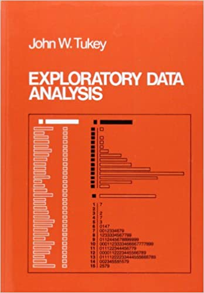
Data Visualization with ggplot2
ODSC West
Outline
Part 1
Why do we need graphs?
An exploratory mindset
Surprise or confirm, then communicate
The grammar of graphics
- Part 2
- RStudio Cloud
- Exercises & solutions
- Creating a graph (layer-by-layer)
- Applying the grammar
Part 1
- Intros 👋
- Workshop materials ⬇️
- Basic understand of
ggplot2syntax ✔️ - Build your first graph! ✔️
Why do we need graphs?
Raw data don’t communicate well
It’s hard to make sense of millions of rows and/or thousands of columns
Fortunately, we are excellent at seeing patterns:
“the human brain has a superior ability to mentally manipulate animate and inanimate patterns into a myriad of intangible symbols that can then be recombined to produce new images of the world;”
“we therefore live partly in worlds of our own mental creation, super-imposed upon or distinct from the natural world.”
Graphs allow us to explore complexity with symbols and images
Exploratory Data Analysis
“Exploratory Data Analysis (EDA)” first coined by American mathematician John Tukey in 1977
“The greatest value of a picture is when it forces us to notice what we never expected to see.”
- John Tukey, 1977
Exploration requires ‘listening’
“The role of the data analyst is to listen to the data in as many ways as possible until a plausible ‘story’ of the data is apparent”
- John T. Behrens, Principles and Procedures of Exploratory Data Analysis
Exploration is a ‘state of mind’
“More than anything, EDA is a state of mind. During the initial phases of EDA you should feel free to investigate every idea that occurs to you. Some of these ideas will pan out, and some will be dead ends…”
“As your exploration continues, you will hone in on a few particularly productive areas that you’ll eventually write up and communicate to others.”
- Hadley Wickham, R for Data Science
An Exploratory Mindset
Exploration requires a Bayesian Mindset (1 of 3)
We all have implicit beliefs, or priors, about the world
What we think we know (i.e.,our expectations)
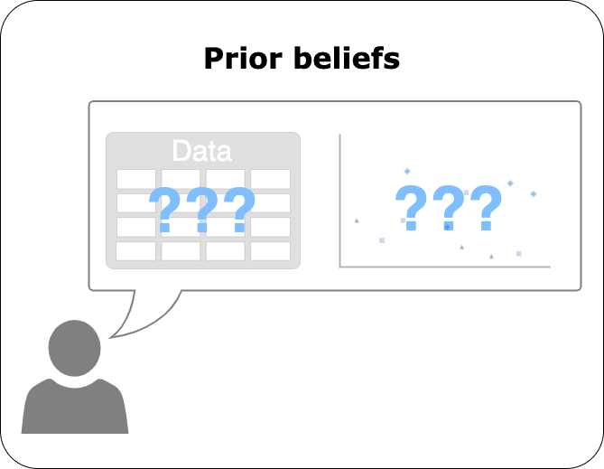
Exploration requires a Bayesian Mindset (2 of 3)
When we encounter new information or data, our priors get updated
Our expectations + new data (i.e., what we see)
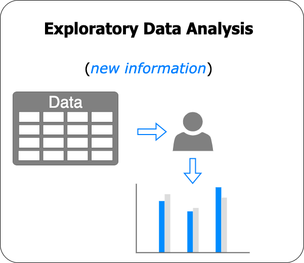
Exploration requires a Bayesian Mindset (3 of 3)
Our updated beliefs, or posteriors, depend on our priors and our perceptions of the new information
What we expect + what we see = what we’ve learned
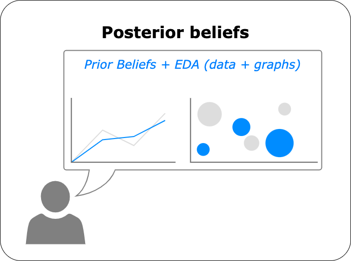
Graphs can confirm our expectations
What if our expectation was that X is related to Y?
…then we graphed the data…
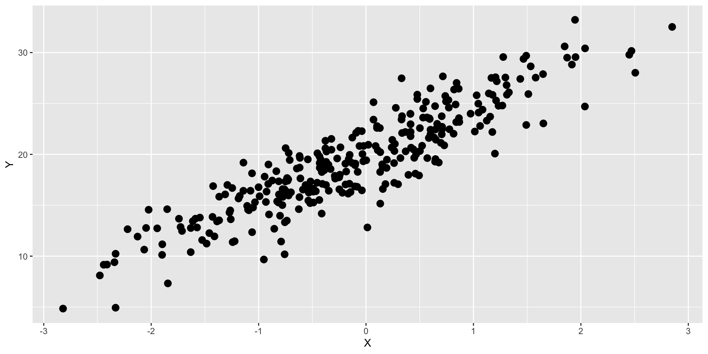
We would say our expectations have been confirmed
Graphs can refute our expectations
What if our expectation was that X is related to Y?
…then we graphed the data…
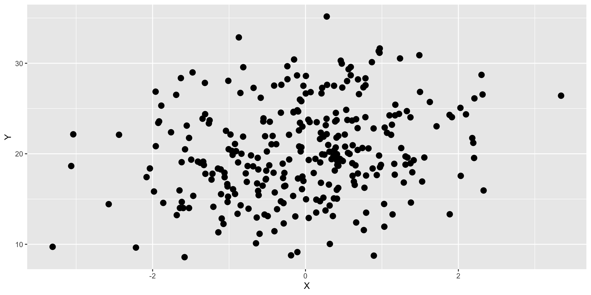
We would say our expectations have been refuted
ggplot2: grammar & syntax
Grammar
The system of rules for any given language
Includes:
- Word meanings
- Internal structure
- Word arrangement
Syntax
The form, structure and order for constructing statements
[[students][[cook][and][serve grandparents]]]
[[students][[cook and serve][grandparents]]]
ggplot2 : grammar & syntax
Built on top of the grammar & syntax of R
“In R, objects are like nouns, and functions (fn) are like verbs”
functions do things to objects
ggplot2: a layered language for graphs
ggplot2 is comprised of layers
- Data
- Mapping
- Statistics
- Geometric objects
- Position adjustments
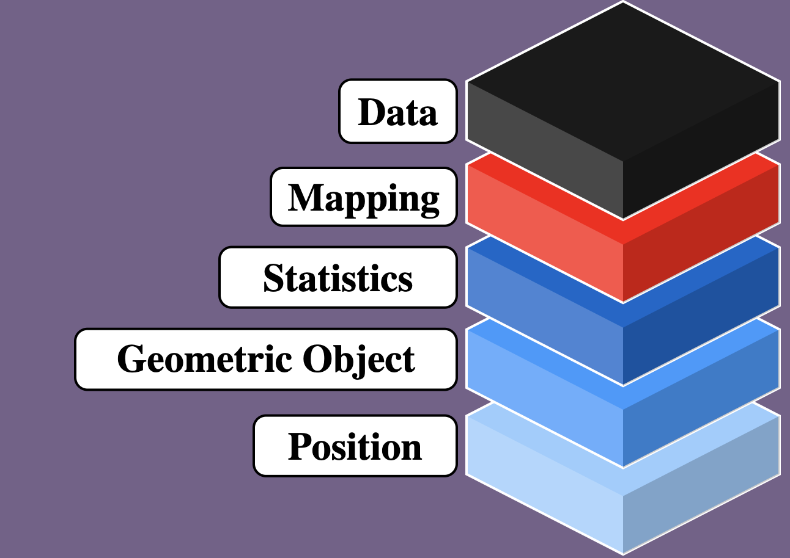
ggplot2: data
The data layer consists of a rectangular object (like a spreadsheet) with columns and rows
ggplot2: mapping
The mapping layer assigns columns (variables) from the data to a visual property (i.e. graph ’aes’thetic)
ggplot2: geoms
geom_*() functions include statistical transformations, shapes, and position adjustments for how to ‘draw’ the data on the graph
ggplot2: layers
We can have multiple layers (data, mappings, geoms) in a single graph
Layers = infinitely extensible
ggplot2 is a system for,
“making infinite use of finite means” - Wilhelm von Humboldt
With a finite number of objects & functions, we can combine ggplot2’s grammar and syntax to create an infinite number of graphs!
ggplot2: templates
Basic Template: Data, aesthetic mappings, geom
ggplot2: more templates
Template + 1 Layer: more geoms and more aesthetic mappings
ggplot2: even more!
Template + 1 Layer + Facet Layer: template, more aesthetic mappings, and facets!
Templates = infinitely extensible!
Themes
Part 2
- RStudio Cloud ✔️
- Exercises & solutions ✔️
- Creating a graph (layer-by-layer) ✔️
- Applying the grammar ✔️
RStudio.Cloud
RStudio.Cloud: Set up (1 of 4)
Head to RStudio.Cloud, you will see the following:
Log in with your GitHub credentials
RStudio.Cloud: Set up (2 of 4)
On the top of the RStudio IDE, you will see the following:
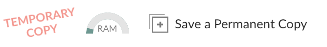
Click on Save a Permanent Copy to add this project to your workspace
RStudio.Cloud: Set up (3 of 4)
In the Files pane, click on the inst.R file to open it
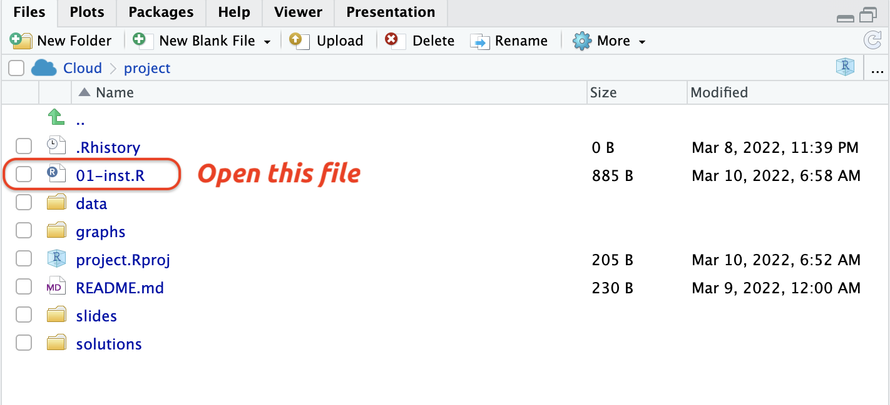
RStudio.Cloud: Set up (4 of 4)
In the Source pane, click on the Source icon to run inst.R
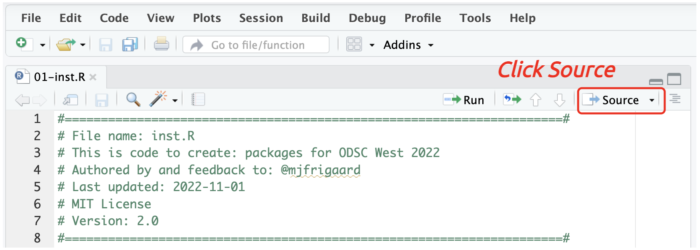
This sends the code in inst.R to the Console
RStudio.Cloud: Exercises
The exercises are in the exercises/ folder
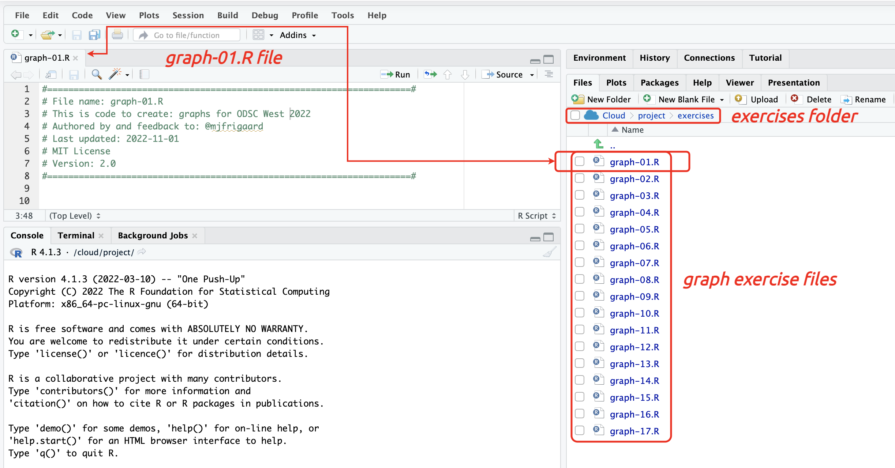
RStudio.Cloud: Solutions
Each exercise has a solution file in solutions/ folder
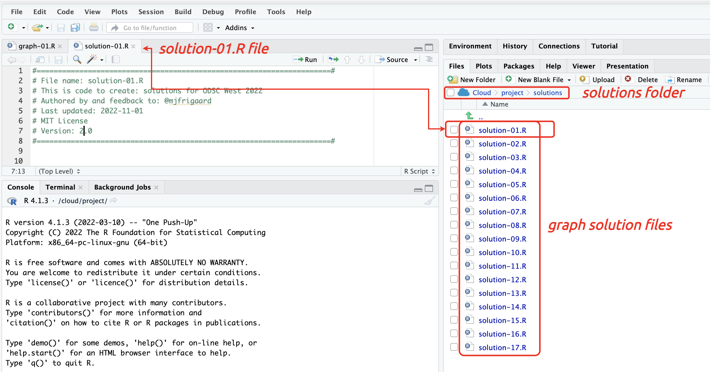
Quick Tip
Tip: writing code can be frustrating, especially in the beginning…
…it doesn’t always produce a tangible result…
…but creating visualizations is rewarding!!!
ggplot2: build the labels first!
- Create a
title,subtitle(with data source), andx/yaxis labels
ggplot2: build graph, check labels
Build labels, build graphs, then check labels!
What’s wrong here?
ggplot2: build graph, check labels, revise
x and y are flipped!
Fixed!
On the importance of revision:
Revision Sharpens Thinking:
“More particularly, rewriting is the key to improved thinking. It demands a real open-mindedness and objectivity.”
“It demands a willingness to cull verbiage so that ideas stand out clearly. And it demands a willingness to meet logical contradictions head on and trace them to the premises that have created them.”
“In short, it forces a writer to get up his courage and expose his thinking process to his own intelligence.”
The data
Viewing data (1 of 2)
View() opens the RStudio data viewer
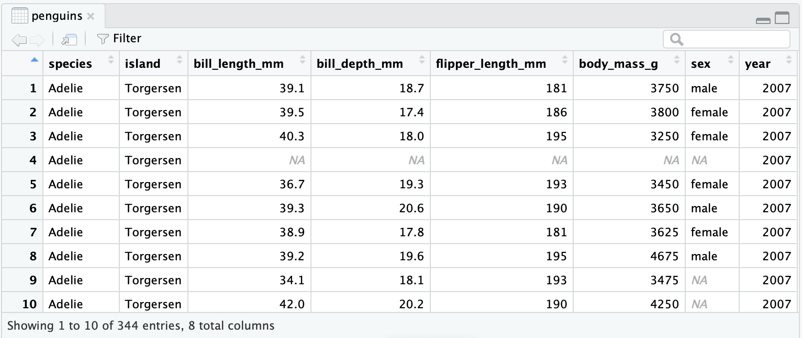
Viewing data (2 of 2)
glimpse() and str() are displayed in the console
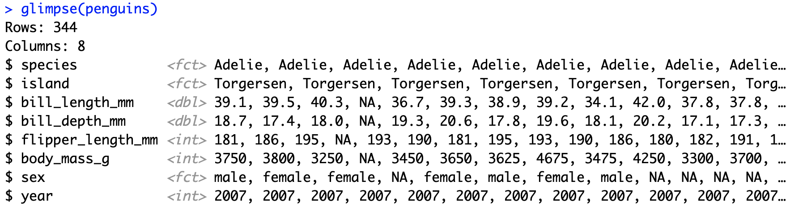
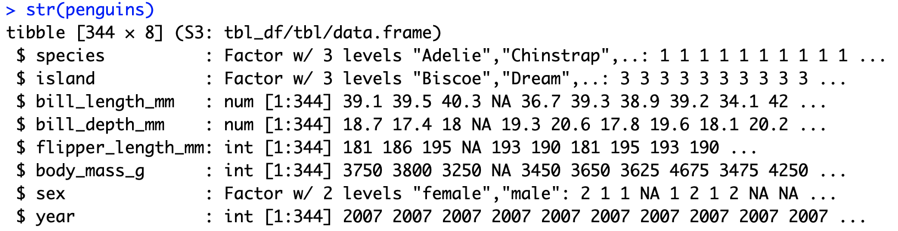
Build from scratch, layer-by-layer
graph 01: LABELS!
We want to build the labels first:
- title = “Bill and flipper length of Palmer penguins”
- subtitle = “Size measurements for adult foraging penguins”
- x = “Bill length (mm)”
- y = “Flipper length (mm)”
graph 01: Initialize plot with data

graph 02: Map variables to positions
graph 03: Adding geoms
graph 04: Don’t forget the labels!
Global vs. local mapping
Global mapping
We’ve just created a graph by setting global aesthetics
Local mapping
Mapping aesthetics globally and then adding the geom_*() function results in the same graph as when we map aesthetics locally (inside the geom_*() function)

The ggplot2 templates (refresher)
The template from part 1 uses local mappings (i.e. aesthetic mappings are set inside the geom_* function).
Below we’ve adjusted the template to include global mappings (and the option to include aesthetic mappings locally)
Read more here.
graph 05: Convert global to local mappings
For graph-05.R, convert the global aesthetics to local aesthetics inside the geom_point() function
Visual encodings
What are visual encodings?
Visual encodings are what we see on the graph
Things like position, size, shape, color, etc.
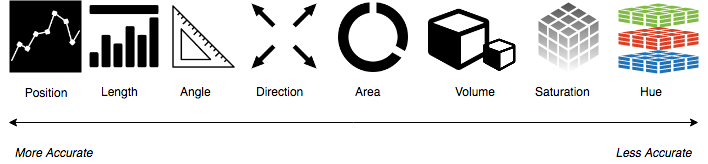
Ranked by accuracy
graph 06: Adding color (global)
graph 07: Adding color (local)
Map color to the species variable using local aesthetic mapping
graph 08: Color vs. Fill (1 of 2)
Below we’ll look at the counts of sex vs. species of Palmer penguins